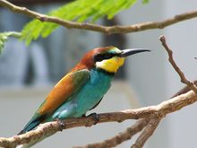
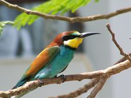

| European Bee-eater | |
|---|---|
|  | |
| Conservation status | |
| Binomial name | |
| Merops apiaster Linnaeus, 1758 |
| European Bee-eater | |
|---|---|
|  | |
| Conservation status | |
| Binomial name | |
| Merops apiaster Linnaeus, 1758 |
The European Bee-eater, Merops apiaster, is a near passerine bird in the bee-eater family Meropidae. It breeds in southern Europe and in parts of north Africa and western Asia. It is strongly migratory, wintering in tropical Africa, India and Sri Lanka. This species occurs as a spring overshoot north of its range, with occasional breeding in northwest Europe.
This species, like other bee-eaters, is a richly-coloured, slender bird. It has brown and yellow upper parts, whilst the wings are green and the beak is black. It can reach a length of 27–29 cm (10.6–11.4 in), including the two elongated central tail feathers. Sexes are alike.
This is a bird which breeds in open country in warmer climates. Just as the name suggests, bee-eaters predominantly eat insects, especially bees, wasps and hornets which are caught in the air by sorties from an open perch. Before eating its meal, a European Bee-eater removes the sting by repeatedly hitting the insect on a hard surface. It eats some 250 bees daily. Lizards and frogs are also taken.
These bee-eaters are gregarious, nesting colonially in sandy banks, preferably near river shores, usually at the beginning of May. They make a relatively long tunnel in which the 5 to 8, spherical white eggs are laid around the beginning of June. Both the male and the female take care of the eggs, which are brooded for about 3 weeks. These birds also feed and roost communally.
The call is a pleasant distinctive trill.

{kind=link}